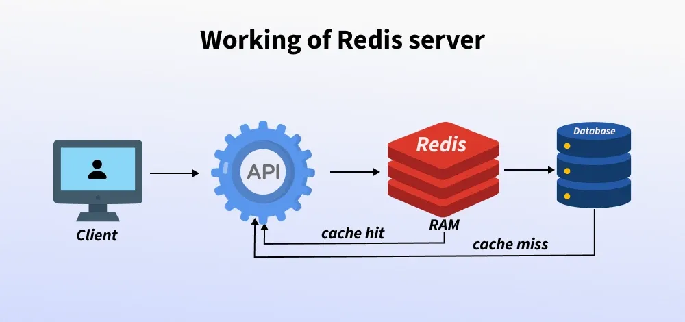

Redis (Remote Dictionary Server) is a fast database used for in-memory caching to reduce server load by reducing disk and/or network read and write operations.
Redis acts as a caching layer between the database and the client to speed up data access and reduce the load on the main database. When a client asks for data, the API Gateway forwards the request to Redis.
If Redis has the data (cache hit), it returns it quickly through the API Gateway to the client. If the data is missing (cache miss), Redis retrieves it from the database, stores it in the cache for future requests, and then passes it back through the API Gateway to the client. This flow speeds up response times and reduces the database load.
If Redis has the data (cache hit), it returns it quickly through the API Gateway to the client. If the data is missing (cache miss), Redis retrieves it from the database, stores it in the cache for future requests, and then passes it back through the API Gateway to the client. This flow speeds up response times and reduces the database load.
Before starting to learn Redis we need to install Redis on our system.
Now let's understand this with the help of example:
import redis
r = redis.Redis(host='localhost', port=6379, db=0)
r.set('name', 'Alia')
print(r.get('name').decode('utf-8'))
r.set('name', 'Riya')
print(r.get('name').decode('utf-8'))
r.delete('name')
print(r.get('name'))
code-1
import redis
This line imports the redis Python library, which allows you to talk to a Redis server from your Python code.
r = redis.Redis(host='localhost', port=6379, db=0)
Here, you are creating a Redis connection:
host='localhost': connects to Redis running on your own computerport=6379: the default port Redis listens ondb=0: Redis supports multiple logical databases numbered from 0, and you’re using database 0So this "r" variable is now your handle to talk to Redis.
r.set('name', 'Alia')
This line stores the key name with the value Alia in Redis.
print(r.get('name').decode('utf-8'))
This retrieves the value stored under the key name (which is Alia) from Redis.
r.get('name') returns the value in bytes format, e.g. b'Alia'.decode('utf-8') converts those bytes to a normal string, so it prints Alia.Consider you have a MySQL database and you are constantly querying the database which reads the data from the secondary storage, computes the result, and returns the result.
If the data in the database is not changing much you can just store the results of the query in redis-server and then instead of querying the database which is going to take 100-1000 milliseconds, you can just check whether the result of the query is already available in redis or not and return it result which is going to be much faster as it is already available in the memory.
Redis is fast because it keeps all its data in memory instead of on disk, so it doesn’t waste time reading from a hard drive. It also uses just one thread with an event loop to process commands, which avoids the complexity and delays of managing multiple threads.
On top of that, Redis uses well-optimized data structures and a simple, lightweight communication protocol called RESP to talk over the network. These design choices mean Redis can handle many requests at once, with very little delay, and respond almost instantly.
Read more here: Why Redis is so fast and popular?
| MongoDB | Redis |
|---|---|
| Document-based NoSQL database | In-memory key-value store, NoSQL |
| Stores data as BSON documents (JSON-like) | Stores data as key-value pairs, strings, sets, lists, hashes, etc. |
| Disk-based, persistent storage | Primarily in-memory, but can persist data to disk (RDB, AOF) |
| Slower compared to in-memory stores like Redis | Extremely fast due to in-memory storage |
| Built-in persistence with automatic backups | Optional persistence with RDB snapshots or AOF logs |
| Supports complex querying with rich operators like $gt, $lt, $regex, etc. | Limited querying capabilities (basic key-value operations) |
| Ideal for large datasets, complex queries, and rich document structures | Ideal for caching, real-time analytics, messaging, and high-speed applications |
| More complex to manage and scale due to its rich features | Simple to use, mainly for high-speed, low-latency use cases |
Redis is a fast, in-memory data store ideal for caching, real-time analytics, and messaging. It offers high performance, scalability, and optional persistence, making it perfect for microservices and high-speed applications. Redis outperforms MongoDB in speed, especially for low-latency tasks.